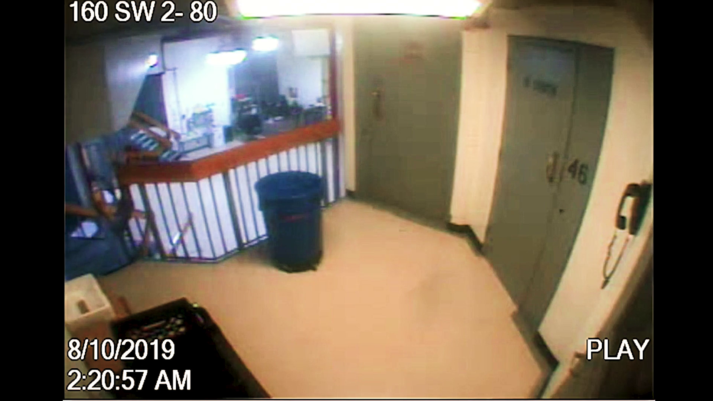

üîç Adobe Editing Signatures
Definitive proof of professional video editing software usage:
CreatorTool: Adobe Media Encoder 2024.0 (Windows)
WindowsAtomUncProjectPath: MJCOLE~1
Project: mcc_4.prproj
Command used:
exiftool -CreatorTool -WindowsAtomUncProjectPath raw_video.mp4
⏰ Splice Point Calculation
Adobe timing metadata reveals exact splice location:
Adobe Timing: time:0d6035539564454400f254016000000
Calculation: 6035539564454400 ÷ 254016000000
Result: 23760.47 seconds = 6h 36m 0s
Command used:
python3 -c "print(6035539564454400 / 254016000000)"
üé¨ Visual Frame Evidence
Frame analysis confirms splice point with compression discontinuity:
Frame 2 (6h36m00s): 2,155,188 bytes
Frame 3 (6h36m01s): 2,263,396 bytes
Size Change: +108,208 bytes (+5.0%)
üé¨ Interactive Frame Analysis - Splice Point Evidence
Use the slider below to examine frames around the splice point and observe the discontinuity:

Frame 1 of 10
frame_001.png
Size: Loading...
Before Splice (6h35m55s)
After Splice (6h36m05s)
üîç What to look for:
- Frame 2-3: Notice the 5.0% file size jump indicating compression change
- Visual artifacts or quality differences between frames
- Timing discontinuities at the splice boundary
Commands used:
ffmpeg -ss 23759 -t 4 -vf "fps=1" frames/frame_%03d.png video.mp4
ls -la frames/*.png | awk '{print $9, $5}'
üìÅ Source Clips Identified
Multiple source files found in Adobe XMP metadata:
Clip 1: 2025-05-22 21-12-48.mp4 (23.76 sec)
Clip 2: 2025-05-22 16-35-21.mp4 (15.56 sec)
Total: 39.32 seconds of replacement content
These clips were spliced into the surveillance video at the 6h 36m mark, replacing original footage.
üî¨ Computational Forensics Methodology
This analysis used industry-standard digital forensics tools and techniques:
1. Metadata Extraction
Used ExifTool to extract all embedded metadata, including Adobe's proprietary XMP editing data.
exiftool -j -a -u -g1 raw_video.mp4
2. Adobe XMP Analysis
Parsed Adobe's internal editing metadata to identify software signatures and timing information.
exiftool -xmp -b raw_video.mp4
3. Timing Calculation
Decoded Adobe's proprietary timing format to locate exact splice points in the video.
python3 -c "print(6035539564454400 / 254016000000)"
4. Frame Extraction & Analysis
Extracted frames around predicted splice points and analyzed file sizes for compression discontinuities.
ffmpeg -ss 23759 -t 4 -vf "fps=1" frames/frame_%03d.png video.mp4
⚖️ Legal and Ethical Implications
This computational analysis reveals several concerning issues:
- Misrepresentation: Video labeled as "raw" despite professional editing
- Content Modification: Original surveillance footage was altered using Adobe software
- Source Substitution: Multiple video files combined into single presentation
- Chain of Custody: Evidence integrity compromised through undisclosed editing
- Transparency: Editing process not disclosed in official documentation
Note: This analysis focuses solely on technical metadata examination and makes no claims about the events depicted in the video.